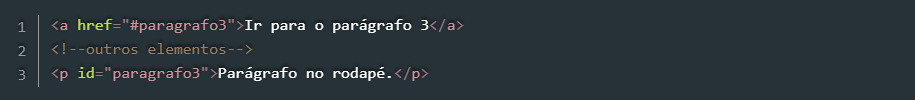
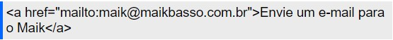
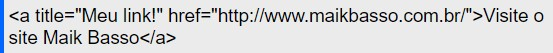
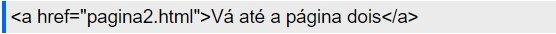
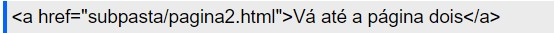
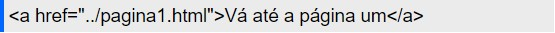
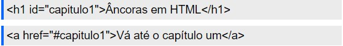

Links são normalmente utilizados para direcionar o usuário para outras páginas, ou para outras partes da mesma página. Nos dois casos, utilizamos a tag a, que possui o atributo href no qual indicamos o destino daquele link.
A Listagem 5 mostra como adicionar um link para outra página, neste caso, indicada pelo arquivo pagina2.html.
Já a Listagem 6 mostra como adicionar um link para um elemento na mesma página. Nesse caso, ao clicar no link o browser mudará o foco para o elemento que possui o atributo id igual àquele indicado no href.
Note também que nesse caso o href requer ainda o sinal de cerquilha (#) antes do id do elemento que será o foco do link.
1- Abrindo o link em uma nova aba: Para abrir um link em uma nova aba vamos utilizar o comando target com o valor igual a _blank (abre o link em uma nova aba do navegador). Exemplo:
Assim como em imagens, também podemos usar o comando title em links. Esse comando exibe um texto, pré-definido como seu valor, no exato instante que o usuário deixar o mouse alguns segundos sobre o link. Exemplo:
Para criar links entre páginas de um mesmo site, não é comum usar-se o link completo de uma página ou arquivo, mas sim o seu nome, e sua respectiva localização nos diretórios (pastas) de um site. Vamos supor que você tenha duas páginas HTML em uma mesma pasta, uma com o nome de pagina1.html, e outra com o nome de pagina2.html. Para criar um link para páginas que estão no mesmo diretório, basta indicar no comando href o nome da página a qual o link se refere. Observe abaixo um exemplo de um link que está na página um, apontando para a página dois. Exemplo:
Agora vamos criar uma nova pasta em seu site, chamada de subpasta, e colocar a pagina2.html dentro desta pasta. Nesta situação, para criar um link na página um que aponte para a página dois, você deve além de indicar o nome do arquivo, indicar também o nome da pasta seguido de uma barra (/). Exemplo:
Já neste caso, se quisermos criar um link na página dois que aponte para a página um, devemos colocar um prefixo na URL(endereço), que indique ao navegador para voltar uma pasta, porque a página um está fora da subpasta. O prefixo é ../ (um diretório acima). Exemplo:
OBS.: Para voltar mais de uma pasta, apenas repita o prefixo no mesmo número de pastas que deseja voltar (EX.: ../../).
Vamos supor que temos uma página que tenha um texto muito grande, com vários capítulos. Você poderá criar um índice com links que levam o usuário até os capítulos específicos. Para que isso seja possível, além de criar um link você precisa colocar uma referência aos capítulos, para isso usa-se o comando id. É importante observar que o valor do comando não pode conter acentos, espaços e também não pode iniciar com números. Você pode utilizar o comando id com diversas tags HTML, mas para esse exemplo escolhi a tag <"h1">, cuja mesma expliquei na postagem “Formatando textos com HTML”. Após ter colocado uma referência ao capítulo ou parte do texto ao qual deseja apontar uma âncora, você deve colocar no comando href um cerquilha (#), seguido do valor atribuído anteriormente ao comando id. Exemplo:
Além de linkar textos, você também pode linkar imagens, e qualquer outra tag ou elemento HTML. Exemplo: